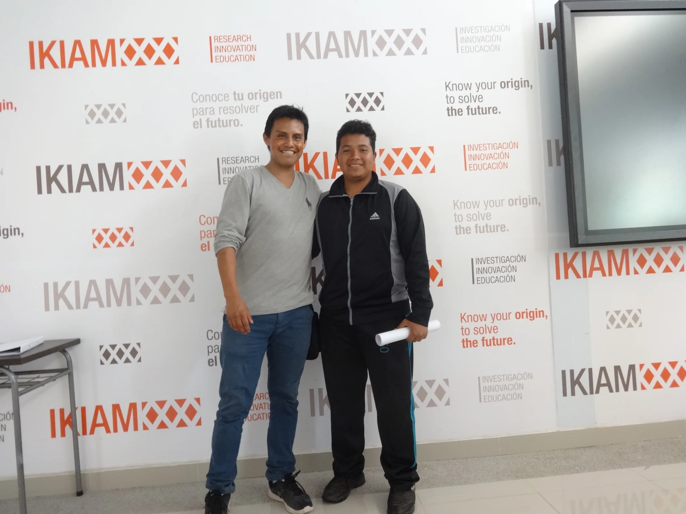

RT International
Ecuadorian device improves the efficiency of condensing water from humidity
Coverage of the Water-Y approach to atmospheric water harvesting.

A record of the people and institutions helping move Garzon Institute ideas from the field into wider conversations.
These articles, research pages, and institutional stories document the origins of Rikuna, the development of Water-Y, and the people working to make science useful in underserved communities.
Coverage of the device, its origins, and Domenica Garzon’s recognition as one of Latin America’s leading innovators.
Coverage of the Water-Y approach to atmospheric water harvesting.
Recognition of Domenica’s work with Water-Y and its wider promise.
A feature on young founders and the potential of projects such as Water-Y.
An in-depth look at the project’s development and water solution.
The origin story of Water-Y and the four students who began building it.
Recognition of Water-Y’s innovation and its potential to address water scarcity.
Institutional recognition of the project and its team.
Stories of Amazonian fieldwork, cave reconnaissance, scientific outreach, and the first mosasaur fossil found in Ecuador.
A narrative account of the Rikuna Project’s origins, discoveries, and community engagement.
Coverage of the expedition to the Amazon, cave reconnaissance, and collaboration with Tamia Yura.
Recognition of Domenica’s outreach and service through the Rikuna Project.
Details on Rikuna as an initiative bringing scientific research and education to underserved communities.
Documentation of the fossil collection and mosasaurid discovery in Ecuador’s Napo formation.

Stories matter because they let a discovery travel without losing the people and places that made it possible.
Share a story with us ↗